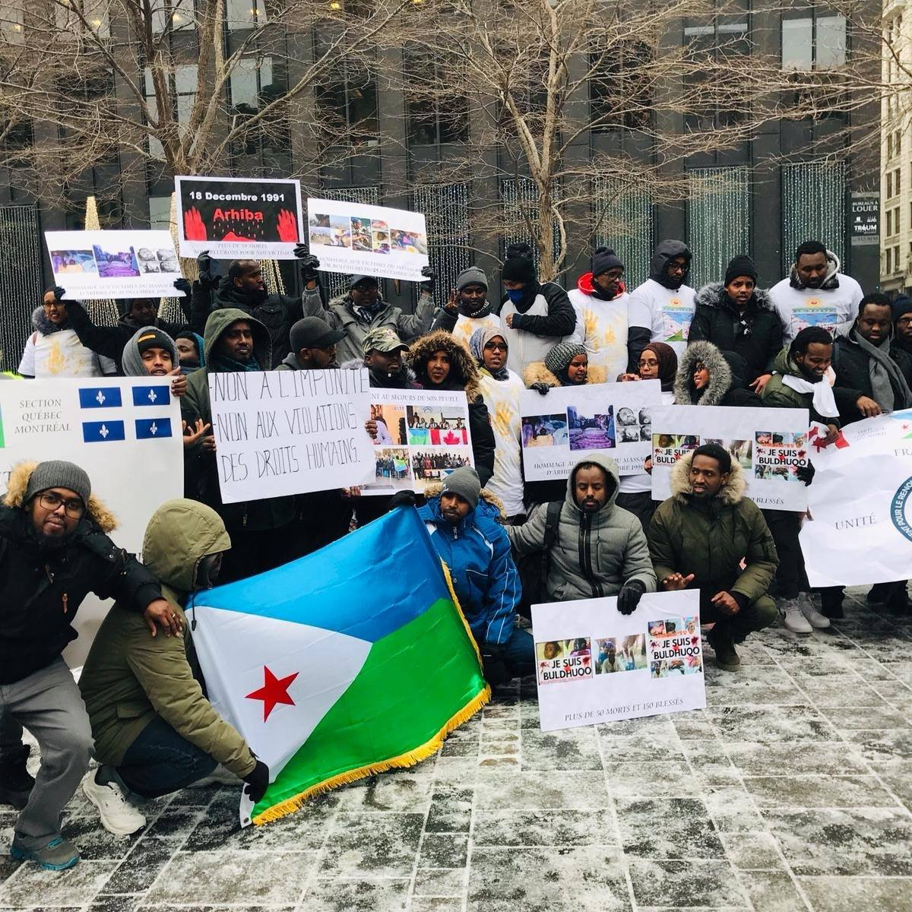

| Accueil | Inscription | Programme | Directions | Dépliants |
L'intégration des nouveaux immigrants au Canada est un processus complexe et multifacette qui implique différents aspects de la vie, y compris l'emploi, le logement, l'éducation, la santé, la culture et la communauté. Voici quelques éléments clés de l'intégration des nouveaux arrivants au Canada.
Au nom du comité d'organisation de notre parti d'opposition politique, nous tenons à adresser un chaleureux message de bienvenue à tous les nouveaux arrivants qui rejoignent notre communauté. Nous comprenons les défis et les obstacles auxquels vous pourriez être confrontés en tant que nouveaux immigrants, et nous tenons à vous assurer que notre parti politique est engagé à soutenir votre intégration et votre bien-être dans notre pays. L'intégration des nouveaux arrivants est une priorité pour nous. Nous croyons fermement en la force de la diversité et en l'importance de créer un environnement accueillant et inclusif pour tous les membres de notre communauté. C'est dans cet esprit que nous nous engageons à œuvrer pour :
|  |